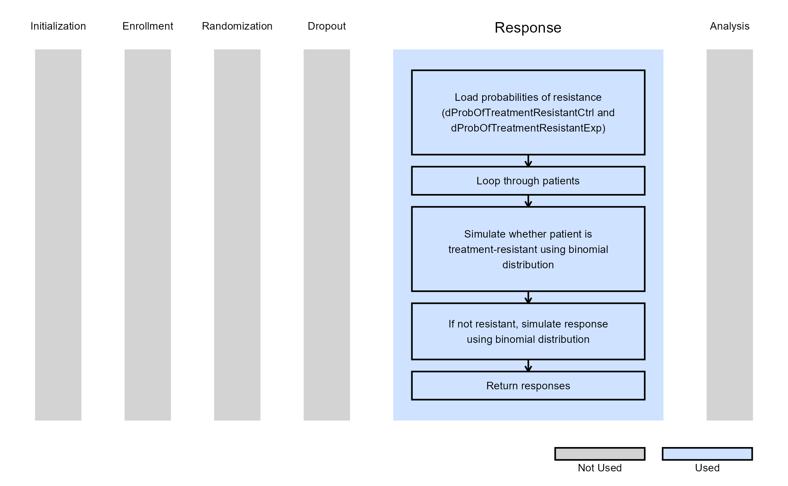
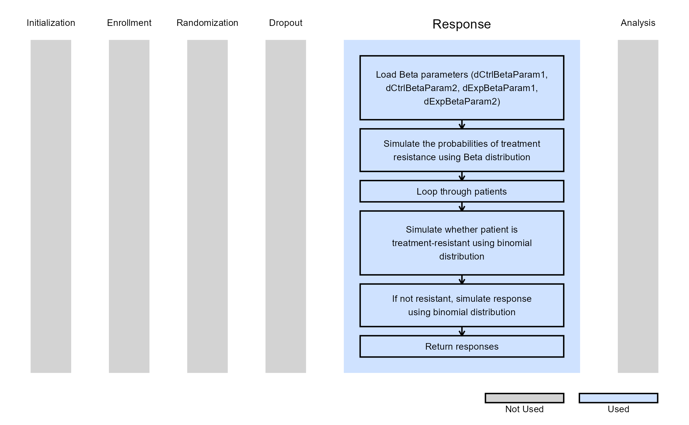

2-Arm, Binary Outcome - Patient Simulation
J. Kyle Wathen
October 14, 2025
2ArmBinaryOutcomePatientSimulation.RmdThese examples are related to the Integration Point: Response - Binary Outcome. Click here for more information about this integration point.
Introduction
The following examples illustrate how to integrate new patient outcome simulation (response) capabilities into East Horizon or East using R functions in the context of a two-arm trial. In each example, the trial design includes a standard-of-care control arm and an experimental treatment arm, with patient outcomes modeled as binary data.
Once CyneRgy is installed, you can load this example in RStudio with the following commands:
CyneRgy::RunExample( "2ArmBinaryOutcomePatientSimulation" )Running the command above will load the RStudio project in RStudio.
East Workbook: 2ArmBinaryOutcomePatientSimulation.cywx
RStudio Project File: 2ArmBinaryOutcomePatientSimulation.Rproj
In the R directory of this example you will find the following R files:
SimulatePatientOutcomePercentAtZero.Binary.R - This file provides an example R function to simulate patient data from a mixture distribution where a proportion of patients do not respond to treatment. The code in Example 1 can be used when the proportion of patients that don’t respond to treatment is a fixed value.
SimulatePatientOutcomePercentAtZeroBetaDist.Binary.R - This file provides an example R function to simulate patient data from a mixture distribution where a proportion of patients do not respond to treatment. This approach assumes that the percentage of patients that do not respond to treatment is unknown and must first be drawn from a Beta distribution.
Example 1 - Simulate Binary Data from a Mixture Distribution
This example is related to this R file: SimulatePatientOutcomePercentAtZero.Binary.R
In this example, the patient outcome is binary, where 0 represents treatment failure (non-response), and 1 indicates a successful response. However, an unknown proportion of patients are treatment-resistant and will not respond, resulting in an outcome of 0. Based on historical data, it is estimated that between 20% and 40% of patients fall into this category.
The R function SimulatePatientOutcomePercentAtZero.Binary is provided to explore the proportion of treatment-resistant patients and assess its impact on expected study power. In these examples, a binomial distribution is used to determine whether a patient is treatment-resistant. If a patient is not treatment-resistant, their outcome is then simulated from a binomial distribution based on the response probability specified in East Horizon or East and then sent to R.
Refer to the table below for the definitions of the user-defined parameters used in this example.
| User parameter | Definition |
|---|---|
| dProbOfTreatmentResistantCtrl | Value between 0 and 1 representing the probability a patient is treatment-resistant in the control arm. |
| dProbOfTreatmentResistantExp | Value between 0 and 1 representing the probability a patient is treatment-resistant in the experimental arm. |
The figure below illustrates where this example fits within the R integration points of Cytel products, accompanied by a flowchart outlining the general steps performed by the R code.

Example 1.1 - All Patients Respond
Assume that no patient will be treatment-resistant. A binomial distribution is used to determine whether a patient is treatment-resistant or not. If the patient is not treatment-resistant, their outcome is simulated from a binomial distribution using the parameters specified in East Horizon or East and sent to R. In this example, the probability of a patient being treatment-resistant is set to zero. Refer to the table below for the values of the user-defined parameters used in this example.
| User parameter | Value |
|---|---|
| dProbOfTreatmentResistantCtrl | 0.0 |
| dProbOfTreatmentResistantExp | 0.0 |
This demonstrates that using the R function with a treatment resistance probability of zero produces the same results as simulating the data directly with the default engine of East Horizon or East.
Example 1.2 - 20% of Treatment-Resistant Patients
Now, assume that, on average, 20% of patients will be treatment-resistant. A binomial distribution is used to determine whether a patient is treatment-resistant or not. If the patient is not treatment-resistant, their outcome is simulated from a binomial distribution using the parameters specified in East Horizon or East and sent to R. Refer to the table below for the values of the user-defined parameters used in this example.
| User parameter | Value |
|---|---|
| dProbOfTreatmentResistantCtrl | 0.2 |
| dProbOfTreatmentResistantExp | 0.2 |
Example 1.3 - 40% of Treatment-Resistant Patients
This example is similar to the previous one, but here we assume that, on average, 40% of patients will be treatment-resistant. Refer to the table below for the values of the user-defined parameters used in this example.
| User parameter | Value |
|---|---|
| dProbOfTreatmentResistantCtrl | 0.4 |
| dProbOfTreatmentResistantExp | 0.4 |
Example 2 - Simulation of Patient Data from a Mixture Distribution with Mixture Percent Sampled from a Beta Distribution
This example is related to this R file: SimulatePatientOutcomePercentAtZeroBetaDist.Binary.R
Similarly to Example 1, this function models a binary patient outcome, where 0 represents treatment failure (non-response) and 1 indicates a successful response, and an unknown proportion of patients are treatment-resistant and will not respond, resulting in an outcome of 0.
Now, the function SimulatePatientOutcomePercentAtZeroBetaDist.Binary assumes that the probability of a patient being treatment-resistant is random and follows a Beta distribution, incorporating variability in the unknown probability of treatment resistance. Additionally, the function allows for a different Beta distribution for each treatment arm, enabling the evaluation of how a treatment that reduces the likelihood of failure would perform in the trial. In these examples, a Beta distribution is used to determine whether a patient is treatment-resistant. If the patient is not treatment-resistant, their outcome is then simulated from a binomial distribution based on the response probability specified in East Horizon or East, with the data sent to R for further analysis.
Refer to the table below for the definitions of the user-defined parameters used in this example.
| User parameter | Definition |
|---|---|
| dCtrlBetaParam1 | Alpha parameter for the Beta Distribution used to get the probability a patient is treatment-resistant in the control arm. |
| dCtrlBetaParam2 | Beta parameter for the Beta Distribution used to get the probability a patient is treatment-resistant in the control arm. |
| dExpBetaParam1 | Alpha parameter for the Beta Distribution used to get the probability a patient is treatment-resistant in the experimental arm. |
| dExpBetaParam2 | Beta parameter for the Beta Distribution used to get the probability a patient is treatment-resistant in the experimental arm. |
The figure below illustrates where this example fits within the R integration points of Cytel products, accompanied by a flowchart outlining the general steps performed by the R code.

Example 2.1 - 20%-40% (95% CI) of Treatment-Resistant Patients
For this example, independent distributions are used, which have a 95% credible interval of (0.2, 0.4). The function first simulates the probability of treatment resistance for both the control and experimental arms using these Beta distributions. It then uses the simulated probabilities to determine the proportion of treatment-resistant patients. Refer to the table below for the values of the user-defined parameters used in this example.
| User parameter | Value |
|---|---|
| dCtrlBetaParam1 | 23.1 |
| dCtrlBetaParam2 | 55.2 |
| dExpBetaParam1 | 23.1 |
| dExpBetaParam2 | 55.2 |
In this example, it is assumed that the two probabilities are sampled from the same distribution but are not identical within a given simulation. The R code can be easily adapted to modify this assumption if needed.
Example 2.2 - 20%-40% (95% CI) of Control Treatment-Resistant Patients, 10%-30% (95% CI) of Experimental Treatment-Resistant Patients
In this example, the treatment reduces the probability of treatment resistance by 10% on average compared to the control. Specifically, assume that the probability of being treatment-resistant in the control group follows a distribution, with a 95% credible interval of (0.2, 0.4). For the experimental treatment, assume the probability of being treatment-resistant follows a distribution, with a 95% credible interval of (0.1, 0.3). Refer to the table below for the values of the user-defined parameters used in this example.
| User parameter | Value |
|---|---|
| dCtrlBetaParam1 | 23.1 |
| dCtrlBetaParam2 | 55.2 |
| dExpBetaParam1 | 10.8 |
| dExpBetaParam2 | 46.3 |